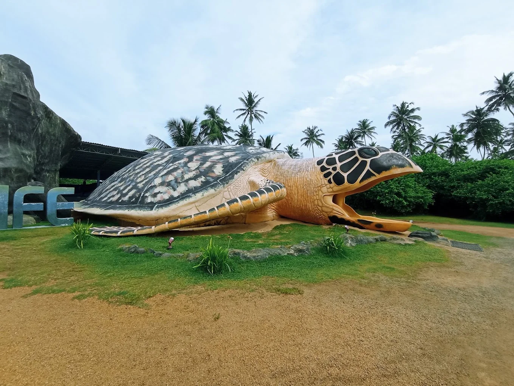
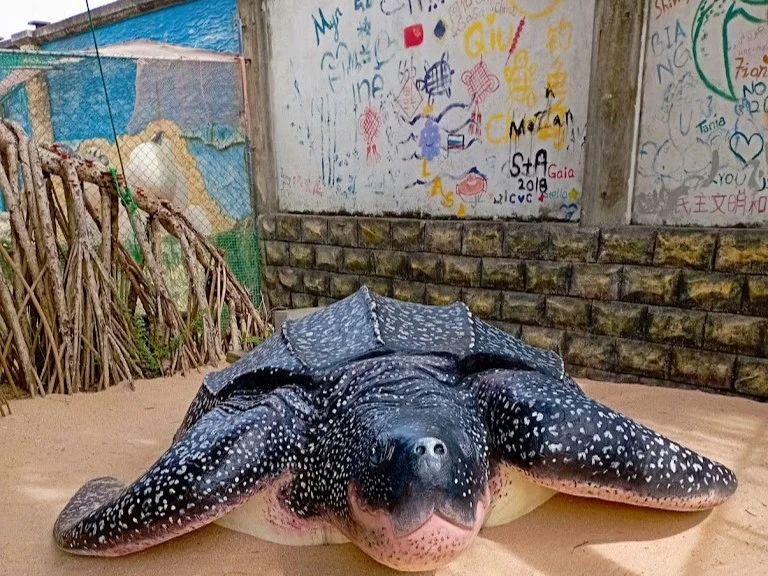

Kosgoda Sea Turtle Conservation Project
The Kosgoda Sea Turtle Conservation Project ("KSTCP") is a project established by Dudley Perera and has been underway since 1988
The main aim of the project is to monitor local sea turtle activity and conserve the local nesting sites.


